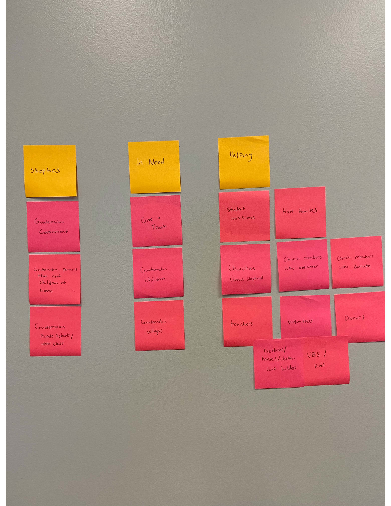

Audience and Goals
Give and Teach is an organization dedicated to helping children in underprivledged villages in Guatemala.
Determine Audience
For this portion of the exercise we wrote down every group, organization, or party that would be interacting with the website.
Sticky Note Chart
For my audience and different important groups to keep in mind, I decided to divide it up into three main groups; those in need, those who are helping, and skeptics.
Under skeptics I had the government of Guatemala, Guatemalan parents, and Guatemalan private schools or the upperclass. The Government of Guatemala does not place a lot of importance on education and therefore it is severely underfunded and in dire need of help. Guatemalan parents often do not undersrtand the importance of education or need their children's help at home to provide for their families. Even private schools scorn the lower class and refuse to donate old materials to local villages. If they donate materials it has to be several hours away from the private school.
The groups that are in need are Give and Teach; the organization itself, the children of Guatemala, and the villages as a whole, as many of the families do not have jobs or a means to provide for themselves.
The groups that are actively helping are student missions, the host families that provide for the volunteers, Churches, church members that volunteer, church members who donate, teachers, volunteers that build the houses and chicken coops, volunteers that work with the childrenn, and other donors and humanitarians.
Overarching Goals
Client
• Give and Teach is the client. Their goals are to increase teacher training, meet the spiritual needs of the community, and meet the physical needs of the community.
• Their goal is to train teachers in methods and strategies that will leave no student behind. Helping teachers understand the 8 ways children learn and providing materials for them to use will help almost every child.
• Spiritually, they help by sharing the Gospel through the ministry of Vacation Bible School, sports camps, and block parties just to name a few. Give & Teach partners to share the Gospel with hundreds of students in public schools each year. Our local Guatemalan staff hold Bible studies in the villages on a regular basis. Our medical teams share the Gospel with patients while they are waiting to see the doctor.
• Give & Teach strives to help meet the basic needs of food, water, clothes and shelter with those in need. They have built over 87 houses and countless chicken coops and stoves.
Audience
• The audience of Give and Teach would be local communities and people in need, Churches and other organizations that are looking to give and volunteer with the organization.
• Churches and other organizations are looking to give back, help their global community, or make a difference in their home country, Guatemala.
• To give monetary and non-monetary resources.
• To volunteer themselves and work in Guatemala.
• To learn more about the educational crisis in Guatemala.
Website
• The goal of the website is to explain who give and teach is.
• To make it easy to request resources or have volunteers have a means to reach out and connect
• To make the education crisis more evident.
• To make information easy to find and well designed
• Connect with other organizations
Specific Goals
| User | Goal | Content/Action |
|---|---|---|
| Churches | To donate monetary and non-monetary resources, to send volunteers, and to spread awareness. | Hold fundraisers, educate the church members, and to collect money and supplies for the organization. |
| Students | Gain service experience and travel and help the less fortunate. | Building houses, chicken coops, and stoves, and by helping at the VBS, and other events for the kids. |
| The Community | Spread awareness and ask for donations or volunteers. | Increase donations and recruit volunteers. |
| Teachers | Educate the community about the importance of education, find resources for schools, and teach local teachers methods to help the students. | Hold workshops and classes to help teachers, and have collections of school supplies and workbooks. |
| Those who want to volunteer or donate | Inform them of duties, mission statement and goals, and inform them of what they can do to help. | Become a sponsor or staff member to Give and Teach to grow, donate clothes, shoes, food, money, workbooks, school supplies, etc. |
Goals Conclusion
1. Why does this site need to exist?
The site needs to exist because there is a genuine need and the children and underprivileged communities in Guatemala need help. There needs to be a well-organized website that allows the organization to effectively portray their goals and their work, and to have a way for others who wish to help have a way to reach out.
2. Are there any metrics that you or the client may be shooting for? (i.e., traffic, donation amount, etc.)
We want to know how many people are interacting with the website, want to know the donation amount, and how many people are seeking more information or wish to help.
3. What will make you look at this site as a success?
It will be a success if I am able to design a site that fits all of the information into an easy to read and inspiring page. I want people to feel educated after reading the site, but also compelled to do whatever they can to help.
The goals of this organization are to help provide for the children and less fortuante citizens in poverished villages in Guatemala. Through the use of education, spiritual needs, and physical needs, Give and Teach and slowly making a difference in the lives of so many people. The goal of the website is to help solve a problem, spread an idea, and fulfill a need. We are trying to find ways to decrease the education crisis, spread God's word, and fulfill a variety of needs. The format of the website will be a type of service and community website. With goals of organizing, representing, reminding, introducing, connecting, and listening. Most of the sites visitors will be Churches, church members who were told about the organization, students looking to get involved, humanitarians, and locals who see a need.
Interviews
Give and Teach
I had the opportunity to talk with .....
Good Shepherd
For this portion of the interview process, I talked to some of the adult volunteers that went to Guatemala with me on my trip in 2019. They have already interacted with the old website and are likely to keep serving with Give and Teach in the future.